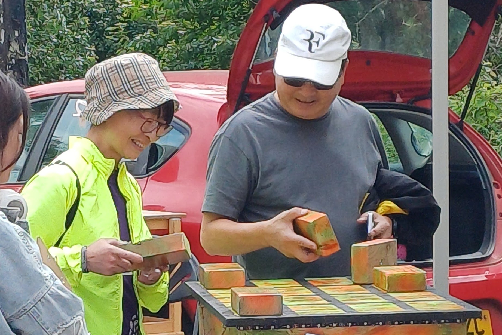

Manned:
- Set up and ready to use
- Manned throughout the event
- Delivered and setup
- Suitable for indoor or outdoor
- No external power required
Give guests something they can actually do. The Junkyard DJ mixing desk is designed so complete beginners can jump in and start mixing with minimal instruction.
This page is for organisers who want the setup as part of their own event, whether that’s a wedding, school activity day, fair or private celebration.

Example hire options
We are really flexible! We are happy to discuss your specific needs and tailor a hire package to fit your event.
Hire enquiry
Use the contact page to ask about dates, availability and how Hire the mixing desk can fit into your festival, wedding, party, school day or fair.